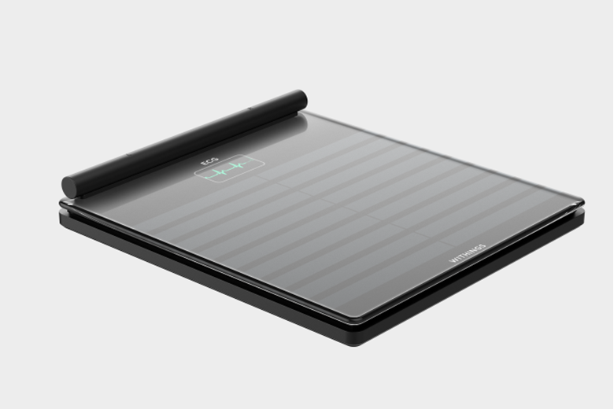

Color Changing Car
Article link - Click here
This is a concept color changing car by BMW. This looks futuristic.
Foldable Tech Devices
Article link - Click here
Samsung entered this realm recently with their popular Galaxy smartphone line of folding new technology inventions..
Smart Bathing
Article link - Click here
PerfectFill is a smart bath where users can control the exact temperature of the water, light, fog, color, how much to fill, and even when to drain.
Health Body Scans
Article link - Click here
Body Scan looks like a typical scale it, in fact, comes with a retractable handle at the front to provide incredibly accurate body composition information.
Solar Roof Shingles
Article link - Click here
GAF Energy is coming out with a solar shingle called the Timberline Solar that you can install like a normal roof.